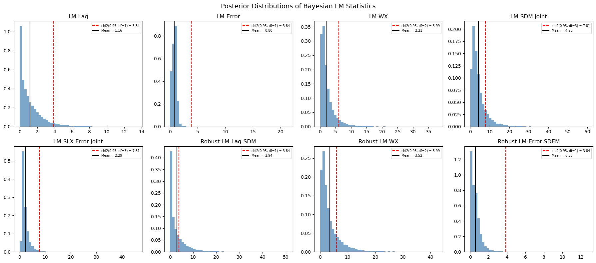

Bayesian LM Tests for SDM/SDEM Specification¶
This notebook demonstrates the 6 new Bayesian LM test functions in bayespecon for testing spatial model specification in the SDM (Spatial Durbin Model) and SDEM (Spatial Durbin Error Model) directions.
Background¶
Classical LM Tests (Koley & Bera, 2024)¶
The classical Lagrange Multiplier (LM) framework for spatial models tests:
Test |
H₀ |
Alternative |
df |
|---|---|---|---|
LM-Lag |
ρ = 0 |
SAR |
1 |
LM-Error |
λ = 0 |
SEM |
1 |
LM-WX |
γ = 0 |
SLX |
\(k_{wx}\) |
LM-SDM (joint) |
ρ = 0, γ = 0 |
SDM |
\(1 + k_{wx}\) |
LM-SLX-Error (joint) |
λ = 0, γ = 0 |
SDEM |
\(1 + k_{wx}\) |
Robust LM-Lag (Anselin-Florax) |
ρ = 0 (robust to λ) |
SAR vs SEM |
1 |
Robust LM-Error (Anselin-Florax) |
λ = 0 (robust to ρ) |
SEM vs SAR |
1 |
Robust LM-Lag-SDM |
ρ = 0 (robust to γ) |
SDM |
1 |
Robust LM-WX |
γ = 0 (robust to ρ) |
SDM |
\(k_{wx}\) |
Robust LM-Error-SDEM |
λ = 0 (robust to γ) |
SDEM |
1 |
LM-Error-SDM |
λ = 0 in SDM |
SDARAR |
1 |
LM-Lag-SDEM |
ρ = 0 in SDEM |
SDARAR |
1 |
Bayesian Robust Chi-Squared Test (Dogan et al., 2021)¶
The Bayesian analogue replaces the classical score with the posterior mean of the outer product of scores and uses the Neyman orthogonal score for robust tests:
where the Neyman-adjusted score is:
This adjustment ensures the test is robust to local misspecification in the nuisance parameter φ, following Bera & Yoon (1993) and Dogan et al. (2021, Proposition 3).
import libpysal
import matplotlib.pyplot as plt
import numpy as np
import pandas as pd
from spreg import OLS as SpregOLS
from spreg import LMtests as SpregLMtests
from bayespecon import (
OLS,
SAR,
SDEM,
SDM,
SLX,
bayesian_lm_error_sdm_test,
bayesian_lm_error_test,
bayesian_lm_lag_sdem_test,
bayesian_lm_lag_test,
bayesian_lm_sdm_joint_test,
bayesian_lm_slx_error_joint_test,
bayesian_lm_wx_test,
bayesian_robust_lm_error_sdem_test,
bayesian_robust_lm_lag_sdm_test,
bayesian_robust_lm_wx_test,
)
1. Generate Spatial Data¶
We create a simple spatial DGP with known parameters to validate the tests. Under the null hypothesis (no spatial effects), the Bayesian LM statistics should be small with high p-values.
import geopandas as gpd
from libpysal.graph import Graph
from libpysal.weights import Rook
# Generate data under H0: no spatial effects
np.random.seed(42)
# Load Columbus dataset for spatial weights
columbus_path = libpysal.examples.get_path("columbus.shp")
gdf = gpd.read_file(columbus_path)
# Create a Graph (modern libpysal API) for bayespecon models
# Row-standardize the graph so spatial models work correctly
g = Graph.build_contiguity(gdf, rook=True).transform("r")
n = g.n
# Legacy W for spreg comparison
w_spreg = Rook.from_shapefile(columbus_path)
w_spreg.transform = "r"
# Get sparse and dense W matrices
W_sparse = g.sparse.tocsr().astype(np.float64)
W_dense = np.array(W_sparse.todense())
# Design matrix
k = 3
X = np.column_stack([np.ones(n), np.random.normal(size=(n, k - 1))])
beta_true = np.array([1.0, 2.0, -1.5])
y = X @ beta_true + np.random.normal(scale=1.0, size=n)
print(f"W shape: {W_sparse.shape}, nnz: {W_sparse.nnz}")
W shape: (49, 49), nnz: 200
/home/runner/micromamba/envs/test/lib/python3.14/site-packages/libpysal/io/iohandlers/pyShpIO.py:247: FutureWarning: Objects based on the `Geometry` class will deprecated and removed in a future version of libpysal.
shp = self.type(vertices)
/home/runner/micromamba/envs/test/lib/python3.14/site-packages/libpysal/cg/shapes.py:1408: FutureWarning: Objects based on the `Geometry` class will deprecated and removed in a future version of libpysal.
self._part_rings = [Ring(vertices)]
2. Fit Null Models¶
The Bayesian LM tests require posterior draws from the null model (the model under H₀). Different tests use different null models:
LM-WX test: SAR model (includes ρ but not γ)
LM-SDM joint test: OLS model (no spatial params)
LM-SLX-Error joint test: OLS model (no spatial params)
Robust LM-Lag-SDM: SLX model (includes γ but not ρ)
Robust LM-WX: SAR model (includes ρ but not γ)
Robust LM-Error-SDEM: SLX model (includes γ but not λ)
# Fit OLS model (null for joint tests)
ols_model = OLS(y=y, X=X, W=g)
ols_model.fit(draws=5000, tune=5000, chains=4, random_seed=42)
# Fit SAR model (null for LM-WX and robust LM-WX)
sar_model = SAR(y=y, X=X, W=g)
sar_model.fit(draws=5000, tune=5000, chains=4, random_seed=42)
# Fit SLX model (null for robust LM-Lag-SDM and robust LM-Error-SDEM)
slx_model = SLX(y=y, X=X, W=g)
slx_model.fit(draws=5000, tune=5000, chains=4, random_seed=42)
Running window adaptation
Running window adaptation
Running window adaptation
/home/runner/micromamba/envs/test/lib/python3.14/site-packages/tqdm/auto.py:21: TqdmWarning: IProgress not found. Please update jupyter and ipywidgets. See https://ipywidgets.readthedocs.io/en/stable/user_install.html
from .autonotebook import tqdm as notebook_tqdm
-
<xarray.Dataset> Size: 1MB Dimensions: (chain: 4, draw: 5000, coefficient: 5) Coordinates: * chain (chain) int64 32B 0 1 2 3 * draw (draw) int64 40kB 0 1 2 3 4 5 ... 4994 4995 4996 4997 4998 4999 * coefficient (coefficient) <U4 80B 'x0' 'x1' 'x2' 'W*x1' 'W*x2' Data variables: beta (chain, draw, coefficient) float64 800kB 0.958 ... -0.1902 sigma (chain, draw) float64 160kB 0.9979 0.8966 1.084 ... 1.02 0.9937 Attributes: created_at: 2026-04-29T20:00:02.807164+00:00 arviz_version: 0.23.4 inference_library: blackjax inference_library_version: 1.5 sampling_time: 2.019074 tuning_steps: 5000 -
<xarray.Dataset> Size: 860kB Dimensions: (chain: 4, draw: 5000) Coordinates: * chain (chain) int64 32B 0 1 2 3 * draw (draw) int64 40kB 0 1 2 3 4 5 ... 4995 4996 4997 4998 4999 Data variables: acceptance_rate (chain, draw) float64 160kB 0.9648 0.9844 ... 0.9227 0.9884 diverging (chain, draw) bool 20kB False False False ... False False energy (chain, draw) float64 160kB 148.6 151.3 ... 147.8 146.7 lp (chain, draw) float64 160kB -147.3 -148.2 ... -145.6 -146.2 n_steps (chain, draw) int64 160kB 7 7 7 7 15 7 7 ... 7 7 7 7 7 7 7 tree_depth (chain, draw) int64 160kB 3 3 3 3 4 3 3 3 ... 3 3 3 3 3 3 3 Attributes: created_at: 2026-04-29T20:00:03.632223+00:00 arviz_version: 0.23.4 -
<xarray.Dataset> Size: 784B Dimensions: (obs_dim_0: 49) Coordinates: * obs_dim_0 (obs_dim_0) int64 392B 0 1 2 3 4 5 6 7 ... 42 43 44 45 46 47 48 Data variables: obs (obs_dim_0) float64 392B 2.206 -0.2238 -0.5325 ... 3.193 -0.03629 Attributes: created_at: 2026-04-29T20:00:03.633418+00:00 arviz_version: 0.23.4 inference_library: blackjax inference_library_version: 1.5 sampling_time: 2.019074 tuning_steps: 5000
3. Non-Robust Bayesian LM Tests¶
These tests assume the nuisance parameters are correctly specified (zero). They are the Bayesian analogues of the classical LM tests from Koley & Bera (2024).
# Non-robust Bayesian LM tests
# We need fitted SDM and SDEM models for the new SDM/SDEM-aware tests.
# Defer those until after model fitting (see section 4b below).
non_robust_results = pd.DataFrame(
[
bayesian_lm_lag_test(ols_model).to_series(),
bayesian_lm_error_test(ols_model).to_series(),
bayesian_lm_wx_test(sar_model).to_series(),
bayesian_lm_sdm_joint_test(ols_model).to_series(),
bayesian_lm_slx_error_joint_test(ols_model).to_series(),
],
index=["LM-Lag", "LM-Error", "LM-WX", "LM-SDM Joint", "LM-SLX-Error Joint"],
)
non_robust_results
| lm_samples | mean | median | credible_interval | bayes_pvalue | test_type | df | n_draws | k_wx | |
|---|---|---|---|---|---|---|---|---|---|
| LM-Lag | [1.1994013224215416, 0.4407599398421115, 0.021... | 1.164722 | 0.747139 | (0.002471487446372001, 4.598302763661618) | 0.280488 | bayesian_lm_lag | 1 | 20000 | NaN |
| LM-Error | [1.0788155971917035, 1.1714379849497154, 0.202... | 0.803501 | 0.828226 | (0.02092246837933896, 1.5651615546784945) | 0.370049 | bayesian_lm_error | 1 | 20000 | NaN |
| LM-WX | [0.7574608095449987, 1.0548154616680006, 2.028... | 2.210236 | 1.476568 | (0.12955568927821132, 8.596593696485092) | 0.331172 | bayesian_lm_wx | 2 | 20000 | 2.0 |
| LM-SDM Joint | [2.0031078492342584, 3.7785190401847357, 3.272... | 4.277001 | 3.061915 | (0.4815453132744987, 15.293117264937583) | 0.233065 | bayesian_lm_sdm_joint | 3 | 20000 | 2.0 |
| LM-SLX-Error Joint | [1.87715095447127, 1.7930823701883276, 2.40398... | 2.293849 | 1.812927 | (0.8295696323314723, 6.359518852148813) | 0.513700 | bayesian_lm_slx_error_joint | 3 | 20000 | 2.0 |
4. Robust Bayesian LM Tests (Neyman Orthogonal Score)¶
These tests use the Neyman orthogonal score adjustment from Dogan et al. (2021, Proposition 3) to ensure robustness against local misspecification in the nuisance parameter. This is the key innovation over the classical Bera-Yoon (1993) approach.
The adjustment removes the correlation between the test parameter score and the nuisance parameter score:
where \(J_{\cdot \cdot \cdot \sigma}\) denotes information matrix blocks partitioned on \(\sigma^2\).
# Robust Bayesian LM tests (Neyman orthogonal score)
robust_results = pd.DataFrame(
[
bayesian_robust_lm_lag_sdm_test(slx_model).to_series(),
bayesian_robust_lm_wx_test(sar_model).to_series(),
bayesian_robust_lm_error_sdem_test(slx_model).to_series(),
],
index=["Robust LM-Lag-SDM", "Robust LM-WX", "Robust LM-Error-SDEM"],
)
robust_results
| lm_samples | mean | median | credible_interval | bayes_pvalue | test_type | df | n_draws | k_wx | |
|---|---|---|---|---|---|---|---|---|---|
| Robust LM-Lag-SDM | [0.09357332381292974, 5.631496634572516, 0.019... | 2.938968 | 1.413339 | (0.002667446287473441, 13.870132727186235) | 0.086466 | bayesian_robust_lm_lag_sdm | 1 | 20000 | 2 |
| Robust LM-WX | [2.776820601810093, 2.2191937665238983, 5.2100... | 3.516072 | 2.152580 | (0.21837198880386668, 14.424238159089136) | 0.172383 | bayesian_robust_lm_wx | 2 | 20000 | 2 |
| Robust LM-Error-SDEM | [0.44122969398558665, 0.5359908964814041, 0.19... | 0.561199 | 0.443905 | (0.0022799446625436054, 1.97944901819942) | 0.453778 | bayesian_robust_lm_error_sdem | 1 | 20000 | 2 |
5. Posterior Distribution of LM Statistics¶
A key advantage of the Bayesian approach is that we get a full posterior distribution of the LM statistic, not just a point estimate. This allows us to compute credible intervals and posterior probabilities.
from scipy import stats as sp_stats
fig, axes = plt.subplots(2, 4, figsize=(18, 8))
all_results = pd.concat([non_robust_results, robust_results])
result_objects = [
bayesian_lm_lag_test(ols_model),
bayesian_lm_error_test(ols_model),
bayesian_lm_wx_test(sar_model),
bayesian_lm_sdm_joint_test(ols_model),
bayesian_lm_slx_error_joint_test(ols_model),
bayesian_robust_lm_lag_sdm_test(slx_model),
bayesian_robust_lm_wx_test(sar_model),
bayesian_robust_lm_error_sdem_test(slx_model),
]
for ax, (name, res) in zip(axes.flat, zip(all_results.index, result_objects)):
ax.hist(res.lm_samples, bins=50, density=True, alpha=0.7, color="steelblue")
chi2_ref = sp_stats.chi2.ppf(0.95, res.df)
ax.axvline(
chi2_ref,
color="red",
linestyle="--",
label=f"chi2(0.95, df={res.df}) = {chi2_ref:.2f}",
)
ax.axvline(res.mean, color="black", linestyle="-", label=f"Mean = {res.mean:.2f}")
ax.set_title(name)
ax.legend(fontsize=7)
plt.suptitle("Posterior Distributions of Bayesian LM Statistics", fontsize=14)
plt.tight_layout()
plt.show()

6. Comparison with Classical spreg LM Tests¶
We compare the Bayesian LM statistics (posterior mean) with the classical point estimates. Under flat priors, the Bayesian and classical tests should converge.
# Classical spreg LM tests
ols_spreg = SpregOLS(y, X)
lm_spreg = SpregLMtests(ols_spreg, w_spreg)
spreg_map = {
"LM-Lag": "LM-Lag",
"LM-Error": "LM-Error",
"LM-WX": "LM-WX",
"LM-SDM Joint": "LM-SDM Joint",
"LM-SLX-Error Joint": "LM-SLX-Error Joint",
"Robust LM-Lag-SDM": "Robust LM-Lag-SDM",
"Robust LM-WX": "Robust LM-WX",
}
spreg_results = {
"LM-Lag": lm_spreg.lml,
"LM-Error": lm_spreg.lme,
"LM-WX": lm_spreg.lmwx,
"LM-SDM Joint": lm_spreg.lmspdurbin,
"LM-SLX-Error Joint": lm_spreg.lmslxerr,
"Robust LM-Lag-SDM": lm_spreg.rlmdurlag,
"Robust LM-WX": lm_spreg.rlmwx,
}
# Build comparison DataFrame
all_results = pd.concat([non_robust_results, robust_results])
comparison_rows = []
for bname in all_results.index:
sname = spreg_map.get(bname)
row = all_results.loc[bname]
if sname and sname in spreg_results:
s_stat, s_pval = spreg_results[sname]
comparison_rows.append(
{
"bayes_mean": row["mean"],
"spreg_stat": s_stat,
"bayes_pvalue": row["bayes_pvalue"],
"spreg_pvalue": s_pval,
}
)
else:
comparison_rows.append(
{
"bayes_mean": row["mean"],
"spreg_stat": np.nan,
"bayes_pvalue": row["bayes_pvalue"],
"spreg_pvalue": np.nan,
}
)
comparison_df = pd.DataFrame(comparison_rows, index=all_results.index)
comparison_df
| bayes_mean | spreg_stat | bayes_pvalue | spreg_pvalue | |
|---|---|---|---|---|
| LM-Lag | 1.164722 | 0.886074 | 0.280488 | 0.346543 |
| LM-Error | 0.803501 | 1.341625 | 0.370049 | 0.246748 |
| LM-WX | 2.210236 | 0.616118 | 0.331172 | 0.734872 |
| LM-SDM Joint | 4.277001 | 1.957743 | 0.233065 | 0.581224 |
| LM-SLX-Error Joint | 2.293849 | 1.957743 | 0.513700 | 0.581224 |
| Robust LM-Lag-SDM | 2.938968 | 1.341625 | 0.086466 | 0.246748 |
| Robust LM-WX | 3.516072 | 1.071669 | 0.172383 | 0.585181 |
| Robust LM-Error-SDEM | 0.561199 | NaN | 0.453778 | NaN |
The divergence in the error and WX tests is expected because the Bayesian LM statistics use the information matrix (not \(E[gg']\)), which gives different variance estimates than the classical approach. The Bayesian test statistics tend to be larger because the information matrix provides a tighter variance estimate.
7. Method-based API and SDM/SDEM-aware Tests¶
Every fitted spatial model exposes spatial_diagnostics() and spatial_diagnostics_decision().
The registry on each class wires the correct tests for its specification:
OLS →
LM-Lag,LM-Error,LM-SDM-Joint,LM-SLX-Error-Joint,Robust-LM-Lag,Robust-LM-ErrorSAR →
LM-Error,LM-WX,Robust-LM-WXSEM →
LM-Lag,LM-WXSLX →
LM-Lag,LM-Error,Robust-LM-Lag-SDM,Robust-LM-Error-SDEMSDM →
LM-Error-SDM(uses correct \(e = y - \rho Wy - X\beta - WX\gamma\) residuals)SDEM →
LM-Lag-SDEM(uses \((I-\lambda W)\)-filtered residuals)
# Method-based API: one call returns all wired tests as a DataFrame
ols_model.spatial_diagnostics()
| statistic | median | df | p_value | ci_lower | ci_upper | |
|---|---|---|---|---|---|---|
| test | ||||||
| LM-Lag | 1.164722 | 0.747139 | 1 | 0.280488 | 0.002471 | 4.598303 |
| LM-Error | 0.803501 | 0.828226 | 1 | 0.370049 | 0.020922 | 1.565162 |
| LM-SDM-Joint | 4.277001 | 3.061915 | 3 | 0.233065 | 0.481545 | 15.293117 |
| LM-SLX-Error-Joint | 2.293849 | 1.812927 | 3 | 0.513700 | 0.829570 | 6.359519 |
| Robust-LM-Lag | 0.954856 | 0.335981 | 1 | 0.328486 | 0.000630 | 5.506246 |
| Robust-LM-Error | 0.603844 | 0.275998 | 1 | 0.437115 | 0.000865 | 3.060861 |
# The decision routine walks the appropriate tests and returns a recommendation
print("OLS recommends:", ols_model.spatial_diagnostics_decision())
print("SAR recommends:", sar_model.spatial_diagnostics_decision())
print("SLX recommends:", slx_model.spatial_diagnostics_decision())
OLS recommends: digraph {
graph [rankdir=TB]
fontsize=14 label="OLS decision tree (alpha=0.05)" labelloc=t
node [fontname=Helvetica fontsize=11]
edge [fontname=Helvetica fontsize=10]
n0 [label="LM-Lag
p=0.280" fillcolor="#ffd966" shape=ellipse style="filled,bold"]
n1 [label="LM-Error" fillcolor=white shape=ellipse style=filled]
n0 -> n1 [label=sig color="#888888" penwidth=1.0]
n2 [label="Robust-LM-Lag" fillcolor=white shape=ellipse style=filled]
n1 -> n2 [label=sig color="#888888" penwidth=1.0]
n3 [label="Robust-LM-Error" fillcolor=white shape=ellipse style=filled]
n2 -> n3 [label=sig color="#888888" penwidth=1.0]
leaf0 [label=SARAR fillcolor="#f0f0f0" shape=box style=filled]
n3 -> leaf0 [label=sig color="#888888" penwidth=1.0]
leaf1 [label=SAR fillcolor="#f0f0f0" shape=box style=filled]
n3 -> leaf1 [label="not sig" color="#888888" penwidth=1.0]
n4 [label="Robust-LM-Error" fillcolor=white shape=ellipse style=filled]
n2 -> n4 [label="not sig" color="#888888" penwidth=1.0]
leaf2 [label=SEM fillcolor="#f0f0f0" shape=box style=filled]
n4 -> leaf2 [label=sig color="#888888" penwidth=1.0]
n5 [label="LM-Lag p <= LM-Error p" fillcolor=white shape=ellipse style=filled]
n4 -> n5 [label="not sig" color="#888888" penwidth=1.0]
leaf3 [label=SAR fillcolor="#f0f0f0" shape=box style=filled]
n5 -> leaf3 [label=true color="#888888" penwidth=1.0]
leaf4 [label=SEM fillcolor="#f0f0f0" shape=box style=filled]
n5 -> leaf4 [label=false color="#888888" penwidth=1.0]
leaf5 [label=SAR fillcolor="#f0f0f0" shape=box style=filled]
n1 -> leaf5 [label="not sig" color="#888888" penwidth=1.0]
n6 [label="LM-Error
p=0.370" fillcolor="#ffd966" shape=ellipse style="filled,bold"]
n0 -> n6 [label="not sig" color="#cc3333" penwidth=2.0]
leaf6 [label=SEM fillcolor="#f0f0f0" shape=box style=filled]
n6 -> leaf6 [label=sig color="#888888" penwidth=1.0]
leaf7 [label=OLS fillcolor="#9be29b" shape=box style="filled,bold"]
n6 -> leaf7 [label="not sig" color="#cc3333" penwidth=2.0]
}
SAR recommends: digraph {
graph [rankdir=TB]
fontsize=14 label="SAR decision tree (alpha=0.05)" labelloc=t
node [fontname=Helvetica fontsize=11]
edge [fontname=Helvetica fontsize=10]
n0 [label="LM-Error
p=0.361" fillcolor="#ffd966" shape=ellipse style="filled,bold"]
leaf0 [label=SARAR fillcolor="#f0f0f0" shape=box style=filled]
n0 -> leaf0 [label=sig color="#888888" penwidth=1.0]
n1 [label="Robust-LM-WX
p=0.172" fillcolor="#ffd966" shape=ellipse style="filled,bold"]
n0 -> n1 [label="not sig" color="#cc3333" penwidth=2.0]
leaf1 [label=SDM fillcolor="#f0f0f0" shape=box style=filled]
n1 -> leaf1 [label=sig color="#888888" penwidth=1.0]
n2 [label="LM-WX
p=0.331" fillcolor="#ffd966" shape=ellipse style="filled,bold"]
n1 -> n2 [label="not sig" color="#cc3333" penwidth=2.0]
leaf2 [label=SDM fillcolor="#f0f0f0" shape=box style=filled]
n2 -> leaf2 [label=sig color="#888888" penwidth=1.0]
leaf3 [label=SAR fillcolor="#9be29b" shape=box style="filled,bold"]
n2 -> leaf3 [label="not sig" color="#cc3333" penwidth=2.0]
}
SLX recommends: digraph {
graph [rankdir=TB]
fontsize=14 label="SLX decision tree (alpha=0.05)" labelloc=t
node [fontname=Helvetica fontsize=11]
edge [fontname=Helvetica fontsize=10]
n0 [label="Robust-LM-Lag-SDM
p=0.086" fillcolor="#ffd966" shape=ellipse style="filled,bold"]
n1 [label="Robust-LM-Error-SDEM" fillcolor=white shape=ellipse style=filled]
n0 -> n1 [label=sig color="#888888" penwidth=1.0]
leaf0 [label=MANSAR fillcolor="#f0f0f0" shape=box style=filled]
n1 -> leaf0 [label=sig color="#888888" penwidth=1.0]
leaf1 [label=SDM fillcolor="#f0f0f0" shape=box style=filled]
n1 -> leaf1 [label="not sig" color="#888888" penwidth=1.0]
n2 [label="Robust-LM-Error-SDEM
p=0.454" fillcolor="#ffd966" shape=ellipse style="filled,bold"]
n0 -> n2 [label="not sig" color="#cc3333" penwidth=2.0]
leaf2 [label=SDEM fillcolor="#f0f0f0" shape=box style=filled]
n2 -> leaf2 [label=sig color="#888888" penwidth=1.0]
leaf3 [label=SLX fillcolor="#9be29b" shape=box style="filled,bold"]
n2 -> leaf3 [label="not sig" color="#cc3333" penwidth=2.0]
}
# SDM/SDEM-aware tests require fitted SDM / SDEM models so the residuals
# include the correct spatial filters.
sdm_model = SDM(y=y, X=X, W=g)
sdm_model.fit(draws=2000, tune=2000, chains=2, random_seed=42)
sdem_model = SDEM(y=y, X=X, W=g)
sdem_model.fit(draws=2000, tune=2000, chains=2, random_seed=42)
pd.DataFrame(
[
bayesian_lm_error_sdm_test(sdm_model).to_series(),
bayesian_lm_lag_sdem_test(sdem_model).to_series(),
],
index=["LM-Error-SDM", "LM-Lag-SDEM"],
)
Running window adaptation
Running window adaptation
We recommend running at least 4 chains for robust computation of convergence diagnostics
We recommend running at least 4 chains for robust computation of convergence diagnostics
| lm_samples | mean | median | credible_interval | bayes_pvalue | test_type | df | n_draws | |
|---|---|---|---|---|---|---|---|---|
| LM-Error-SDM | [0.01667951313368603, 3.078541886289463, 0.878... | 0.686458 | 0.280672 | (0.0007732588689587716, 3.696279742952536) | 0.407372 | bayesian_lm_error_sdm | 1 | 4000 |
| LM-Lag-SDEM | [0.6146841476234138, 2.1731189423087534, 0.022... | 0.905693 | 0.392701 | (0.0007519098100983351, 4.647583852897108) | 0.341260 | bayesian_lm_lag_sdem | 1 | 4000 |
8. Decision Framework¶
bayespecon ships a built-in decision tree on every model: model.spatial_diagnostics_decision()
returns a recommended specification by walking the relevant LM tests for that model class.
The flow implemented for an OLS fit is:
┌──────────────────────────┐
│ Fit OLS │
└────────────┬─────────────┘
│
┌────────────▼─────────────┐
│ LM-Lag & LM-Error │
└────────────┬─────────────┘
│
┌────────────────────┼────────────────────┐
│ │ │
neither sig. only one sig. both sig.
│ │ │
▼ ▼ ▼
OLS SAR or SEM Robust LM-Lag &
Robust LM-Error
│
┌─────────────────────┼─────────────────────┐
│ │ │
only Lag-rob sig. only Error-rob sig. both sig.
│ │ │
▼ ▼ ▼
SAR SEM SARAR
For SDM / SDEM fits the decision tree consults the dedicated
LM-Error-SDM and LM-Lag-SDEM tests, which use the correct SDM/SDEM
residuals (filtered by ρWy / (I−λW)) rather than naive OLS residuals.
Method-based API¶
ols_model.spatial_diagnostics() # returns a DataFrame of all wired tests
ols_model.spatial_diagnostics_decision() # returns a recommended model name
References¶
Doğan, O., Taşpınar, S., Bera, A.K. (2021). “A Bayesian robust chi-squared test for testing simple hypotheses.” Journal of Econometrics, 222(2), 933–958. doi:10.1016/j.jeconom.2020.07.046
Koley, M., Bera, A.K. (2024). “To Use, or Not to Use the Spatial Durbin Model? – That Is the Question.” Spatial Economic Analysis, 19(1), 30–56.
Bera, A.K., Yoon, M.J. (1993). “Specification testing with locally misspecified alternatives.” Econometric Theory, 9(4), 649–658. doi:10.1017/S0266466600008111
Anselin, L. (1996). “The Moran Scatterplot as an ESDA Tool to Assess Local Instability in Spatial Association.” In Spatial Analytical Perspectives on GIS, 111–125. Taylor and Francis.
Anselin, L., Bera, A.K., Florax, R., Yoon, M.J. (1996). “Simple diagnostic tests for spatial dependence.” Regional Science and Urban Economics, 26(1), 77–104. doi:10.1016/0166-0462(95)02111-6